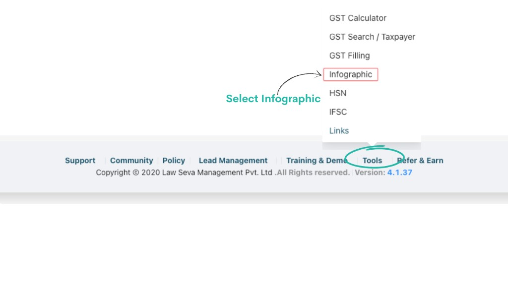
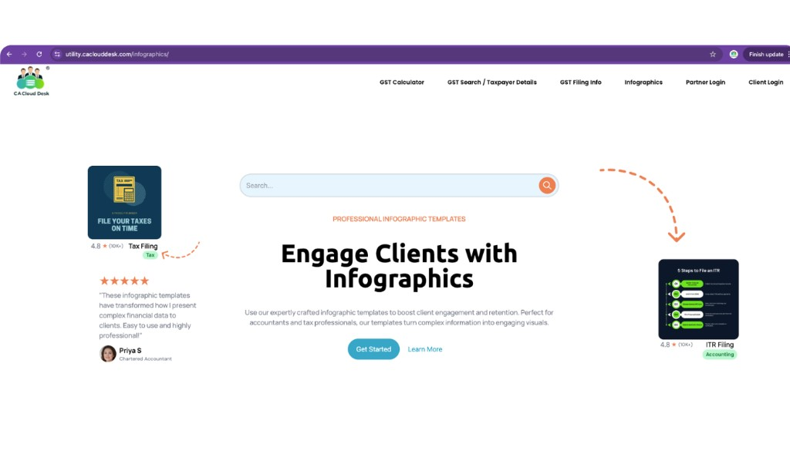
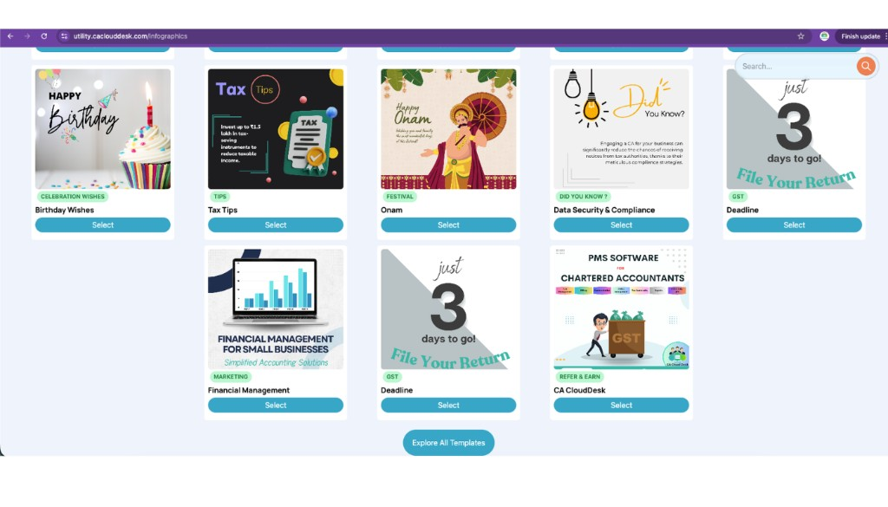
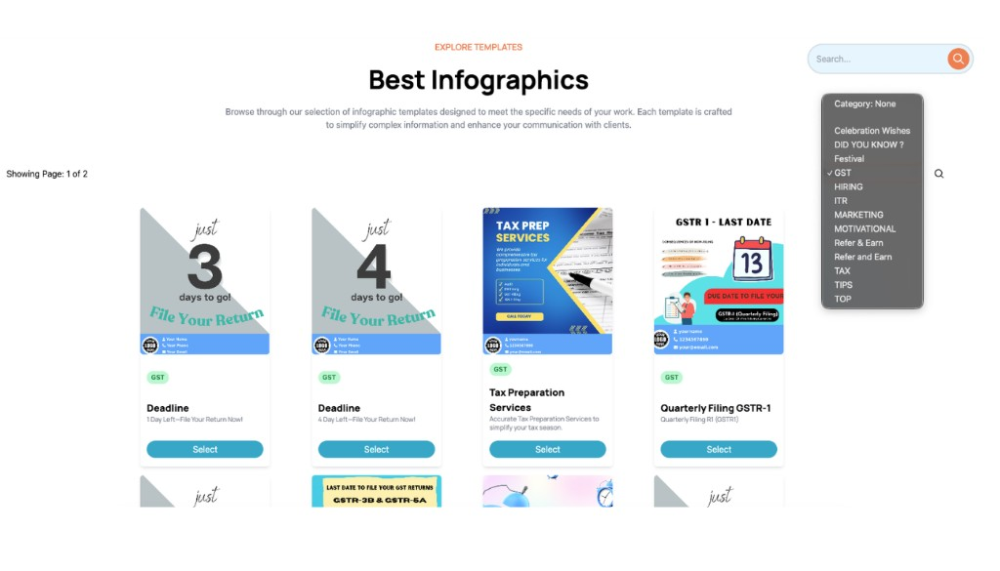
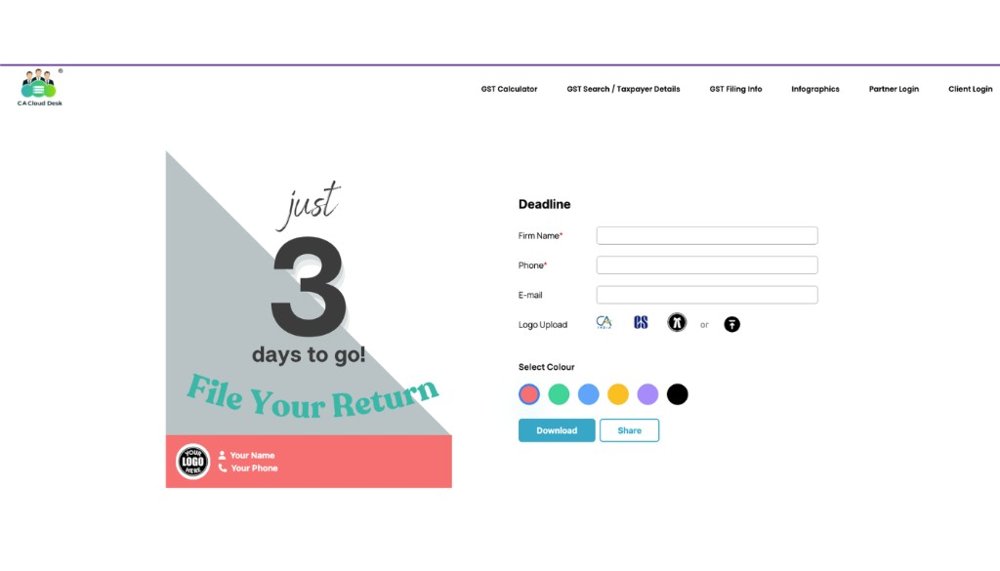

Infographic (Marketing)
Use the Infographic tool in Partner Desk to quickly create professional client‑ready visuals such as tax reminders and information cards, then download or share them in seconds.
Path
Log in to your CA CloudDesk Partner Desk. From the dashboard, scroll to the bottom navigation and click Tools. Under Tools, select Infographic to open the templates gallery.


Infographic gallery at a glance
The Infographic page shows a gallery of ready‑made templates that you can search, filter by category and customise with your firm details.
- Use the Search bar at the top to find templates by keyword (for example, Deadline).
- Use the Category dropdown to filter by type (GST, Festival, Tips, Marketing and more).
- Click Select on any card to open the customisation screen.



Step 1 — Select an infographic template
Search and choose a template (example — Deadline)
In the top Search bar, type the keyword for the design you need — for example, Deadline to show filing due‑date reminders. From the results, click Select on the template you want to use.
You can also narrow down the list using the Category search (for example, choose GST to see GST‑related reminders only).

Step 2 — Enter firm details and branding
Fill the Deadline form
On the right side of the selected template you will see a simple form. Fill in the following details so that your infographic is branded with your firm information:
- Firm Name* — your firm / practice name (mandatory).
- Phone* — contact number to display on the graphic.
- E‑mail — official email ID to show to clients.
- Logo Upload — upload your CA CloudDesk, CA or firm logo from your system.
- Select Colour — choose one of the colour circles to match your branding.